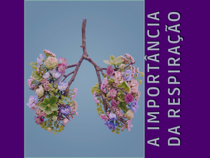
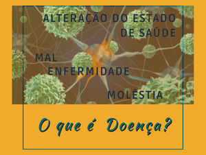
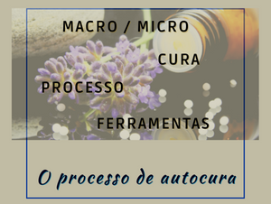

Qual é a primeira coisa que fazemos ao nascer? RESPIRAR!
Para a astrologia, a primeira respiração tem um significado muito importante, pois é o primeiro
contato com a energia terrena. Tanto que o mapa natal é calculado a partir do horário do nascimento,
certo?
O horário da primeira respiração.
Respirar é viver! O ar invade nossos pulmões ao nascer, e quando nos deixa, em nosso último suspiro,
cessa a vida.
Diz-se na Bíblia, que Deus formou o homem do barro, e deu-lhe a vida a partir de um sopro de vida. O
sopro… o ar, a respiração que mantém a vida.
Os esotéricos dizem que um período de manifestação do Universo, chamado Manvantara, corresponde a
uma respiração (ou pulsação) completa de Deus, ou Brahma dos hindus.
Os hindus chamam a nossa energia vital de prana. O prana é captado através da alimentação, do
repouso e, principalmente, a partir da respiração. Os chineses chamam esta energia de Qi. Reich de
Orgone,
Freud de libido. Pouco importa o nome dado, o que importa é que essa energia permeia TUDO que
existe.
Funções que são imprescindíveis ao funcionamento do corpo humano, são involuntárias, ou seja, não
depende da nossa ação para ocorrer. Você não comanda seus batimentos cardíacos, né?
E normalmente também não controla a sua respiração. Seu corpo faz este movimento independentemente
de você ter consciência disso. Mas diferente dos batimentos cardíacos, você pode controlar a
respiração, caso queira. Ou cantores, por exemplo, possuem um alto controle de sua respiração
durante as
músicas, com inspirações e expirações nos momentos adequados.
Fisiologicamente a respiração tem a função de inalar o oxigênio (gás imprescindível para a vida
terrestre) e expelir resíduos, como o gás carbônico.
Existem algumas técnicas que podem nos ajudar a entender e a controlar a nossa respiração, trazendo
diversos benefícios para a nossa saúde física, mental e espiritual.
Você tinha consciência da importância da respiração? Conte pra nós!

No dicionário encontramos a seguinte definição para doença: "alteração biológica do estado de saúde
de um ser, manifestada por um conjunto de sintomas perceptíveis ou não; enfermidade, mal, moléstia."
Eita, complicado isso aqui, né?
Vamos então começar entendendo o que é saúde. Partindo do conceito médico, a OMS (Organização
Mundial de Saúde) define saúde como: um estado de completo bem-estar físico, mental e social.
Vamos pensar então, quais são as exigências demandadas em cada um desses fatores:
Corpo físico: alimentação saudável, ingestão de água, sono adequado, saneamento básico e hábitos de
higiene, atividade física regular, condições ergonômicas, fatores genéticos, entre outros.
Emocional/ Mental: condições adequadas de trabalho, integração social, bons vínculos familiares,
hábitos de lazer e recreação, diminuição do estresse, formações de relacionamentos saudáveis,
condições
financeiras estáveis, entre outros.
Social: acesso à educação e habilitação, ambiente agradável de convivência, integração com o grupo,
liberdade de pensamento, liberdade religiosa, entre outros.
Podemos associar que a falta de qualquer um desses elementos pode levar às doenças. Para nós é fácil
associar o corpo físico às doenças, pois são fatores palpáveis. Mas e os fatores emocionais e
sociais?
Você já havia pensado que eles também acarretam doenças?
Você já ouviu falar em doenças psicossomáticas?
As doenças psicossomáticas são doenças que possuem sua causa em problemas emocionais. Podemos
destacar: enxaqueca, alergias, gastrite, distúrbios intestinais (diarreia e constipação), quedas
constantes de
imunidade, entre outras. E quer saber mais… a ansiedade, a depressão e o estresse são condições que
facilitam o surgimento de doenças.
Sabe aquele dia conturbado no trabalho, em que você volta para casa com a cabeça explodindo? Ou a
dor de barriga antes da apresentação do TCC? Ou a gastrite que ataca quando os boletos vão vencer e
você
não tem a grana pra pagar?
Já aconteceu com você? Sim ou sempre? Conta pra gente nos comentários!

Você conhece uma música do Jorge Ben Jor que diz: "O que está embaixo, é como o que está no alto. O
que está no alto é como o que está embaixo. E por essas coisas fazem-se os milagres…". Esta música
traz
um conhecimento muito antigo de Hermes Trismegisto.
Quando fala-se sobre o "alto" podemos interpretar de várias formas: o universo, a espiritualidade, o
corpo humano, o macro. E o "embaixo" pode ser: a Terra, o mundo material, as células do corpo, o
micro.
Trataremos aqui por macro e micro. E neste momento, especialmente, sobre o humano, seu corpo, suas
células e o processo de autocura.
Somos formados por trilhões de células, que dão origem aos tecidos, que por sua vez dão origem aos
órgãos, que formam o corpo humano. É o trabalho de cada célula, em conjunto com suas irmãs, que nos
dá a vida e nos permite andar, respirar, pensar e tudo mais.
Aquilo que se passa no micro (células) também acontece no macro (corpo) e vice-versa. E quem comanda
tudo isso? O nosso mental, nossos pensamentos, nossas crenças, nossos sentimentos e emoções.
Aquilo que pensamos e sentimos alteram nossas células, modificam seu funcionamento, fragilizam o
corpo e facilita o surgimento de doenças.
Acho que já deve ser ouvido falar sobre o reflexo das emoções nos órgãos. A raiva afeta o fígado; a
tristeza afeta os pulmões; o medo, os rins; a falta ou o excesso de alegria, o coração; preocupação,
o baço; angústia, o estômago; entre outros.
De forma simplista, o processo de autocura se inicia quando reconhecemos aquilo que sentimos, nossas
emoções, e também, o impacto delas em nossa vida. Após reconhecê-las, iniciamos o trabalho de
entender de onde vem cada uma delas, quais os gatilhos que as despertam, para assim ressignificar
isso em
nós, em nossos sentimentos. Este é um processo lento, e difícil também... e recompensador também,
onde
percebemos nossa evolução a cada passo.
Você sabe a diferença entre emoções e sentimentos? Este é o tema do nosso próximo post!